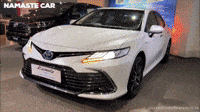
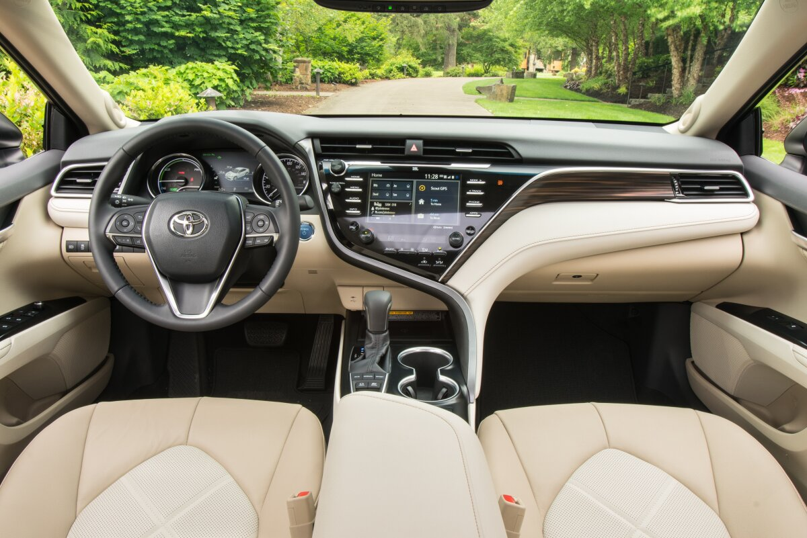
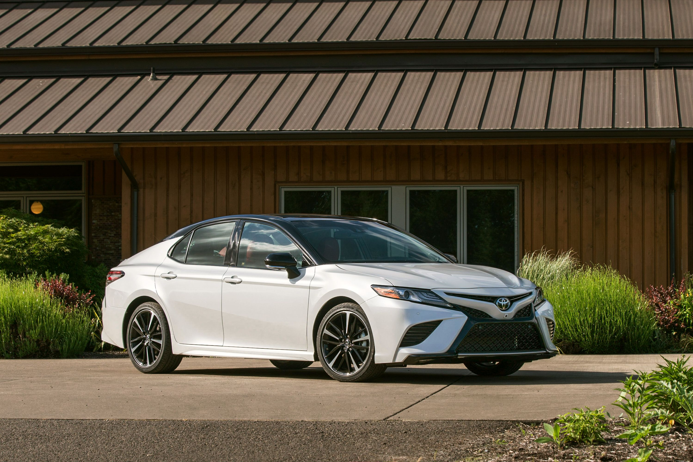

|  |
Between 1979 and 1982, the Camry nameplate was delegated to a four-door sedan model in Japan, known as the Celica Camry. When Camry became an independent model line in 1982 with the V10 series, Toyota made it available as a five-door liftback in addition to the sedan. The subsequent Camry V20 series, debuted in 1986 with a station wagon substituting for the liftback body variant and Japan-only hardtop sedans making their debut.
The company replaced the V20 in 1990 with the V30 sedan and hardtop, but this model series was exclusive to Japan. |
|
The Avenger was built on a 103.7 in (2,634 mm) wheelbase and used either a 2.0 L inline-four engine (the Chrysler 420A) or a Mitsubishi-designed 2.5 L V6. The four-cylinder was coupled to a five-speed manual transmission, shared with the Mitsubishi Eclipse and Eagle Talon, or a four-speed automatic. The V6 engine was only available with the A604 automatic transmission.[5] The Avengers featured a fully independent double wishbone suspension and variable-speed rack-and-pinion steering.
Trims included the Highline base model (the V6 engine, among other options, were made standard in 2000) and the ES.
|

|
|

|
The Camry was facelifted in early 2009 for the 2010 model year with a redesigned fascia, taillights, and an all-new 2.5-liter 2AR-FE four-cylinder engine with a new six-speed automatic transmission. The 2.5-liter engine produces 169 hp (126 kW) for the base, LE, XLE models, and 179 hp (133 kW) for the SE. Power locks, stability control, traction control and tires (205–225 mm or 8.1–8.9 in) were also made standard for 2010. A six speed manual transmission was available on the base model.[137]
|